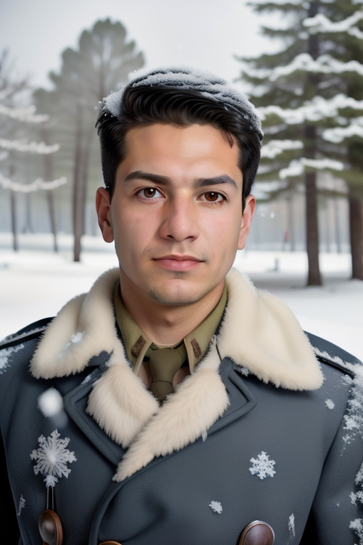

"Ένας άντρας στο χιόνι"
Αποτέλεσμα 1:

Πρόταση 2:
"Ένας πολεμιστής στο δάσος, χρησιμοποιήστε μεσαία υψηλή κλίμακα όπως 78% αυτού"
Αποτέλεσμα 2:
Με το χαρακτηριστικό Headshot στο AiCasso, μπορείτε να δημιουργήσετε εκπληκτικά και μοναδικά πορτρέτα απλά περιγράφοντας αυτό που θέλετε. Είναι τέλειο για να φτιάξετε εντυπωσιακές εικόνες, είτε θέλετε μια ήρεμη σκηνή, έναν επικό πολεμιστή, είτε οτιδήποτε άλλο φαντάζεται η φαντασία σας!
"Ένας άντρας στο χιόνι"
Αποτέλεσμα 1:"Ένας πολεμιστής στο δάσος, χρησιμοποιήστε μεσαία υψηλή κλίμακα όπως 78% αυτού"
Αποτέλεσμα 2:
Θέλετε να προσθέσετε λίγο περισσότερη φαντασία ή έλεγχο στα παραγόμενα headshots σας; Ακολουθούν μερικές ωραίες επιλογές που μπορείτε να προσαρμόσετε:
Θυμηθείτε, αυτές οι παράμετροι είναι εντελώς προαιρετικές. Το AiCasso είναι αρκετά συγχωρητικό, οπότε δεν χρειάζεται να είστε πολύ ακριβείς ή γραμματικά σωστοί. Απλά περιγράψτε αυτό που θέλετε με δικά σας λόγια, και το AiCasso θα κάνει τη μαγεία του. Καλή διασκέδαση δημιουργώντας τα headshots σας!